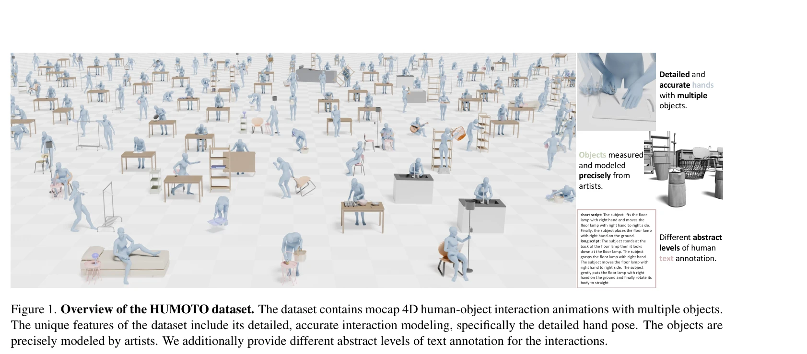
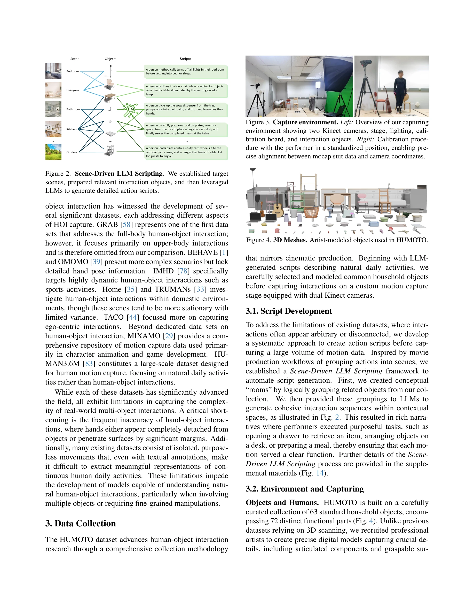

저자: Jiaxin Lu, Chun-Hao Paul Huang, Uttaran Bhattacharya, Qixing Huang, Yi Zhou | 날짜: 2025-04-14 | URL: https://arxiv.org/abs/2504.10414

Figure 1. Overview of the HUMOTO dataset. The dataset contains mocap 4D human-object interaction animations with multipl
HUMOTO는 735개 시퀀스(7,875초)의 고충실도 모션캡처 4D 인간-객체 상호작용 데이터셋으로, 63개의 정밀 모델링 객체와 상세한 손 동작을 포함하며 LLM 기반 스크립팅과 다중센서 캡처로 복잡한 다중-객체 상호작용을 정확히 기록한다.
Figure 1. Overview of the HUMOTO dataset. The dataset contains mocap 4D human-object interaction animations with multipl

Figure 2. Scene-Driven LLM Scripting. We established target
총평: HUMOTO는 고충실도 다중-객체 인간-객체 상호작용 데이터셋으로서, Scene-Driven LLM Scripting과 다중센서 캡처 기술의 창의적 결합을 통해 기존 데이터셋의 한계를 효과적으로 해결하였으며, 정량적 평가 메트릭 도입으로 HOI 데이터셋 분야에 기여한 가치 있는 자산이다.